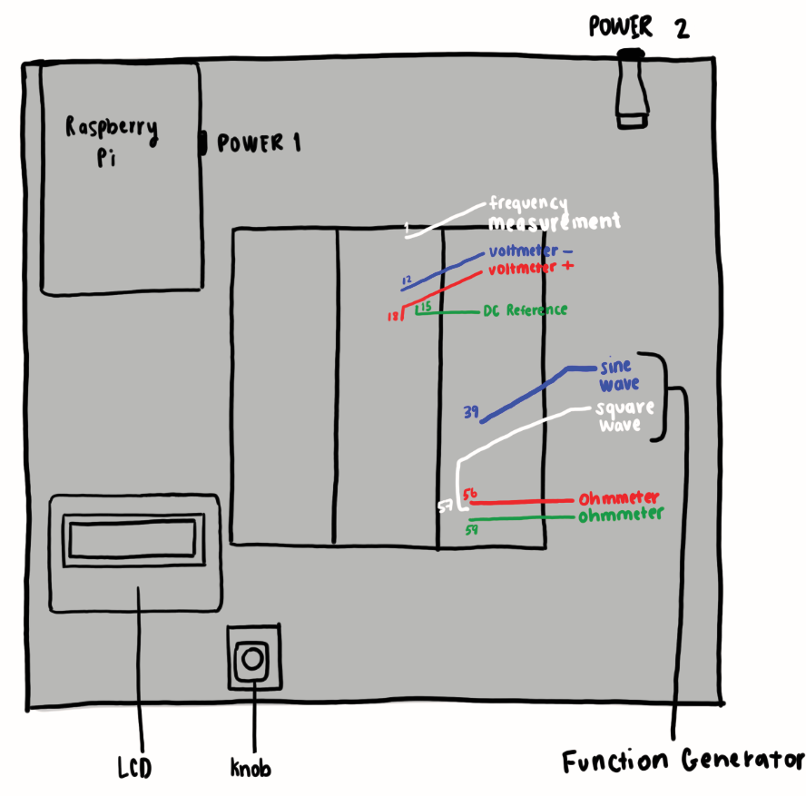
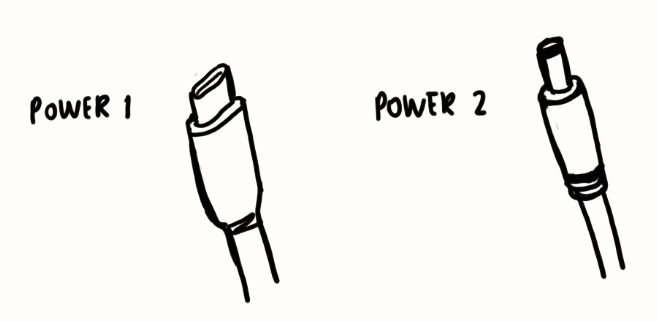
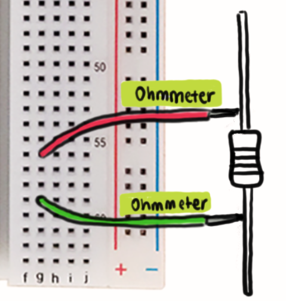
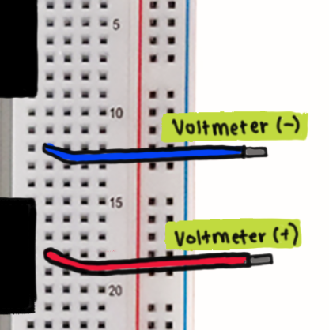
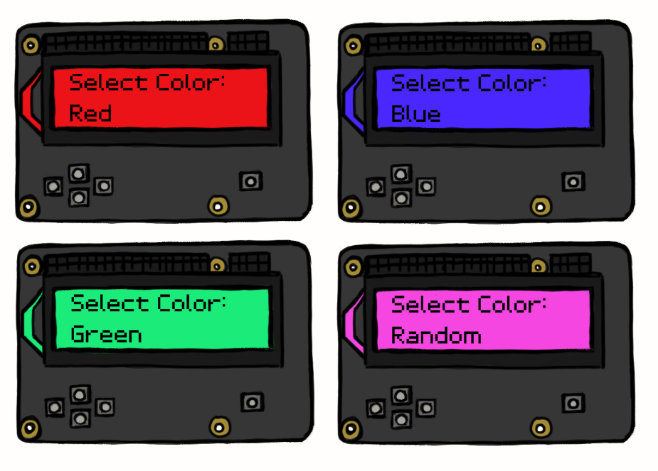

About
This device is an all-in-one electronics workbench. It uses a Raspberry Pi 4 to run all of the processes. This workbench has the ability to perform the functionalities of a Function Generator, Ohmmeter, Voltmeter, DC Reference, Frequency Measurement, and LCD Color Change.
Connecting to Power
To connect the workbench to power, using the wall adapter, plug into the USB-c plug on the Raspberry Pi. The power adaptor should also be plugged into the wall.
Controls

To navigate through the different settings, the main way to do so is by using the knob for different controls. When you rotate it counterclockwise, it goes to the left or decrements values depending on which electronic workbench device you’re using. To go right or increase values, it can be done by rotating it clockwise.
The controls also include a fast and slow increment based on the tool required. For example, when trying to change the frequency, you can spin counterclockwise quickly to increment by 100, and slowly to increment by 10.
To make a selection you only need to click once. Finally, holding the button down for 3 seconds will return to the main menu.
Modes
Function Generator

Function Generator Menu:
To access the Function Generator menu, power on the device and navigate to “Mode Select” by rotating the knob on the device. Locate the "Func Gen" option and press the knob to enter the Function Generator menu.
Type: Select the type of waveform you want to generate, either a sine or a square wave.
Frequency: Set the frequency of the waveform.
Note: The sine wave supports frequencies from 1,000 Hz to 10,000 Hz, while the square wave supports frequencies from 100 Hz to 10,000 Hz.
Amplitude: Adjust the amplitude of the waveform. The available amplitude range is from 1V to 5V.
Output:Turn the function generator output “ON” or “OFF”.
Back: Return to the previous menu.
Main: Return to the main menu.
Setting Waveform Type:
To set the waveform type, select the "Type" option from the Function Generator menu. Press the knob to enter the waveform type selection menu. Choose either "Sine" or "Square" and press the knob to confirm your selection.
Setting Frequency:
To set the frequency of the waveform, select the "Frequency" option from the Function Generator menu. Press the knob to enter the frequency input menu. Use the knob to increase or decrease the frequency value in increments of 10 Hz for slow turns and 100 Hz for fast turns. Press the knob to confirm your selection.
Setting Amplitude:
To set the amplitude of the waveform, select the "Amplitude" option from the Function Generator menu. Press the knob to enter the amplitude input menu. Use the knob to increase or decrease the amplitude value in increments of 0.25V from 1V to 5V. Press the knob to confirm your selection.
Controlling Output:
To control the output of the function generator, select the "Output" option from the Function Generator menu. Press the knob to enter the output control menu. You can choose between "On" to enable the output, "Off" to disable the output, "Back" to return to the previous menu, or "Main" to return to the main menu. Press the knob to confirm your selection.
Exiting the Function Generator:
To exit the Function Generator feature, navigate to the "Back" or "Main" option using the knob and press it to confirm your selection.
Ohmmeter
Accessing the Ohmmeter Menu:
To access the Ohmmeter menu, power on the device and navigate to “Mode Select” by rotating the knob on the device. Locate the "Ohmmeter" option and press the knob to enter the Ohmmeter menu.
Ohmmeter Menu Options:
Once you are in the Ohmmeter menu, you will see the following options:
Line 1: Resistance Value
Back: Return to the previous menu.
Main: Return to the main menu.
Preparing for Resistance Measurement:
Before measuring resistance, ensure that the resistor is properly connected to the Ohmmeter's input terminals. The Ohmmeter can measure resistances within a specific range, so make sure the resistor's value falls within the device's measurable range.
Measuring Resistance:
To start the measurement process, once in the Ohmmeter mode, simply connect a resistor to the leads. The ohmmeter constantly measures resistance so simply connecting a resistor to the leads will cause a read and the values will update in real time. The LCD will display the measured resistance value along with its tolerance (e.g., "R:500ohm +/-50"). If the resistance exceeds the maximum measurable value, the LCD will display "Overload". The ohmmeter can only read between 100 Ohms to 10,000 Ohms.
Exiting the Ohmmeter Menu:
To exit the Ohmmeter menu, you can either choose the "Back" option to return to the previous menu or the "Main" option to return to the main menu. Press the knob to confirm your choice.
Voltmeter
Accessing the Voltmeter Menu:
To access the Voltmeter menu, power on the device and navigate to “Mode Select” using the knob. Locate the "Voltmeter" option and press the select button to enter the Voltmeter menu.
Voltmeter Menu Options:
Once you are in the Voltmeter menu, you will see the following options:
Source: Choose between "External" or "Internal" source for voltage measurement.
Back: This option takes you back to the previous menu.
Main: This option returns you to the main menu.
Setting the Voltage Source:
To set the voltage source, navigate to the "Source" option and press the knob. Use the knob to select between "External" and "Internal" sources. Press the knob again to confirm your choice.
External Voltage Source:
When "External" is selected as the voltage source, the Voltmeter will measure the voltage from an external source connected to the device. Connect the voltage source to the appropriate input terminals of the device, and the Voltmeter will display the measured voltage on the LCD screen with an accuracy of +/- 0.25V.
Internal Voltage Source:
When "Internal" is selected as the voltage source, the Voltmeter will measure the voltage from an internal DC reference source within the device. This mode is useful for calibrating or testing the device's performance. The measured voltage will be displayed on the LCD screen with an accuracy of +/- 0.25V.
Measuring Voltage:
Once the voltage source is selected, the Voltmeter will automatically measure the voltage and display it on the LCD screen. The displayed voltage will be updated in real-time.
Exiting the Voltmeter Menu:
To exit the Voltmeter menu, you can either choose the "Back" option to return to the previous menu or the "Main" option to return to the main menu. Press the select button to confirm your choice.
DC Reference

Accessing the DC Reference Menu:
To access the DC Reference menu, power on the device and navigate to the “Mode Select” using the knob. Locate the "DC Ref" option and press the knob to enter the DC Reference menu.
DC Reference Menu Options:
Once you are in the DC Reference menu, you will see the following options:
Voltage Value Input: This option allows you to set the desired output voltage for the DC reference.
Output: This option enables you to turn the DC reference output “ON” or “OFF”.
Back: This option takes you back to the previous menu.
Main: This option returns you to the main menu.
Setting the Voltage Value:
To set the desired output voltage, navigate to the "Voltage Value Input" option and press the knob. Rotate the knob to increase or decrease the voltage value in 0.25V increments, ranging from 0V to 4V. Once you have set the desired voltage, press the knob again to confirm your choice. The system will update the voltage value accordingly.
Controlling the Output:
To control the output of the DC Reference, navigate to the "Output" option and press the knob. You will see two options: "On" and "Off". Rotate the knob to switch between them and press the knob to confirm your choice. The voltage output state will update accordingly.
Exiting the DC Reference Menu:
To exit the DC Reference menu, you can either choose the "Back" option to return to the previous menu or the "Main" option to return to the main menu. Press the knob to confirm your choice.
Frequency Measurement

Frequency Measurement Menu:
To access the Frequency Measurement menu, power on the device and navigate to the “Mode Select” by rotating the knob on the device. Locate the "Freq Meas" option and press the knob to enter the Frequency Measurement menu.
Frequency Measurement Menu Options:
Once you are in the Frequency Measurement menu, you will see the following options:
External: This option allows you to measure the frequency of an external signal connected to the specified GPIO pin (freqPin).
Internal: This option measures the frequency of an internal signal generated by the device. (Please note that this option is not implemented in the provided code and needs additional implementation.)
Back: This option takes you back to the previous menu.
Main: This option returns you to the main menu.
Measuring the Frequency:
To measure the frequency of an external signal, navigate to the "External" option and press the knob. The frequency measurement will be displayed on the LCD screen in Hertz (Hz). The value will update in real time.
Controlling the Internal Frequency Measurement:
To access the internal frequency measurement, navigate to the "Internal" option and press the knob. (Please note that this option is not implemented in the provided code and needs additional implementation.)
Exiting the Frequency Measurement Menu:
To exit the Frequency Measurement menu, you can either choose the "Back" option to return to the previous menu or the "Main" option to return to the main menu. Press the knob to confirm your choice.
LCD Color Change
Overview:
The LCD (Liquid Crystal Display) in our device is an RGB (Red, Green, Blue) 16x2 character display that provides a simple and intuitive interface for users to interact with the device. This user manual will guide you through the functions and usage of the LCD.
LCD Menu:
In the LCD menu, you can choose from the following options:
Select Color: Choose the background color for the LCD.
Increment: Move through the available color options.
Decrement: Move through the color options in reverse order.
Select: Confirm the currently displayed color option.
Back: Return to the previous menu.
Selecting Color:
To choose a background color for the LCD, navigate to the "Select Color" option in the LCD menu by rotating the knob. Use the knob to move through the available color options: Red, Green, Blue, White, and Random.
Selecting:
To select the currently displayed color option, press the "Select" button. The background color of the LCD will change accordingly.
Exiting the LCD Menu:
To exit the LCD menu, navigate to the "Back" option by rotating the knob up or down and press the knob to confirm your selection.
FAQ
How does it work?
The creative team behind this project, Group 16, used a Raspberry Pi 4 and multiple Python Libraries. We used sensors to detect values and then read and output them with the Pi.
The Sine Wave is Dancing! What should I do?
If there are unusual measurements or readings, turn the Pi off and disconnect the power supply, and reconnect. If it still doesn’t work, call us at 123-456-7891.
The controls are bouncing! How do I fix it?
If there seems to be a lot of bouncing between values or difficulty selecting modes, there is a chance that the rotary encoder is worn out. It is suggested that users try to replace this part to fix issues. Refer to the technical documentation on how to connect the replacement rotary encoder to the board.
Should I hotplug?
Under any circumstance, you should NOT hotplug anything (ie. connect anything or disconnect while the device is on).
Safety Information
WARNING!
Do not submerge the device in water. Do not leave it unattended while powered on. Do not hot-plug anything. Do not let a child use it without parental supervision.
UI Demonstration